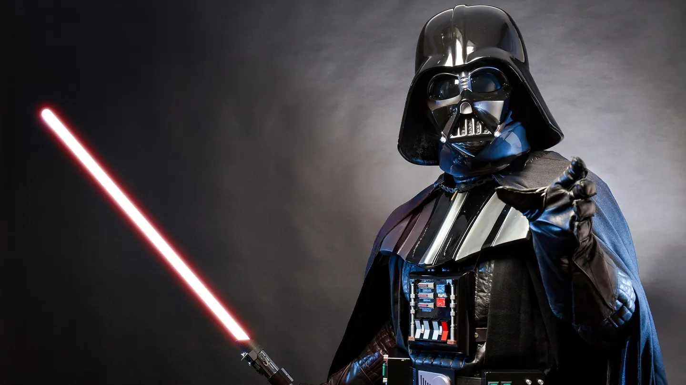
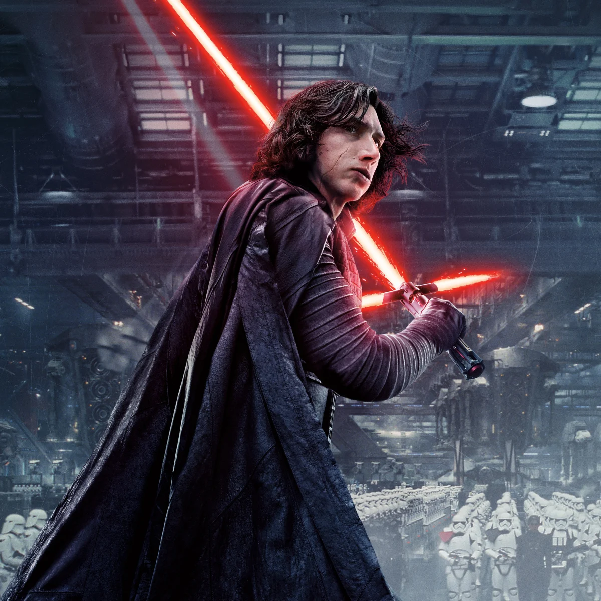

Dark Side
Embrace the power of the Dark Side.
-
Darth Vader
Anakin Skywalker, once a Jedi Knight, turned to the dark side and became Darth Vader. He is a Sith Lord and the enforcer of the Galactic Empire, known for his iconic helmet and breathing apparatus.
-
Emperor Palpatine

Emperor Palpatine, also known as Darth Sidious, is the mastermind behind the rise of the Galactic Empire. He is a powerful Sith Lord and manipulates the galaxy from the shadows.
-
Kylo Ren
Kylo Ren, originally known as Ben Solo, is the son of Leia Organa and Han Solo. He is seduced by the dark side and becomes an apprentice of Supreme Leader Snoke, taking on the persona of Kylo Ren.